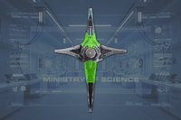
| 绝地潜兵 2 | 绝地潜兵 1 |
“Watchers are the eyes of the 光能者. These floating droids scan for free-thinking lifeforms, and report them to their masters for enslavement or eradication.
— 绝地潜兵 2 PlayStation Store Page
守望者 是一种飞行 光能者，负责扫描战场寻找威胁。 它是唯一能呼叫增援的光能者敌人。
光能者，负责扫描战场寻找威胁。 它是唯一能呼叫增援的光能者敌人。
监视者出现在所有难度，遍布地图各处。 它们不会在Vote Snatchers占据的行星上出现。
监视者在地图各处飞行，用发光的蓝色光线扫描周围环境，显示其观察点。 一旦被绝地潜兵直接看到、被直接攻击或靠近攻击而进入警戒状态，它会……
当再次发现绝地潜兵，或持续被他们攻击时，监视者通常会停下……
它们也可能用特斯拉压制器攻击，在绝地潜兵靠近时发射致残的arcs闪电。
| 部件名称 | 生命值1 | 护甲值2 | 耐久2 | 主血量占比3 | 溢出上限4 | 构造5 | 致命 | 爆炸抗性6 | |
|---|---|---|---|---|---|---|---|---|---|
| 主体 | 600 |

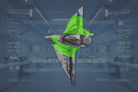 |
0% | - | - | 无 | 是 | 0% | |
| Body | 400 |
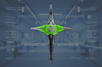
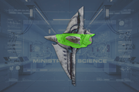 |
0% | 100% | 是 | 无 | 是 | 100% | |
| Eye | 300 |
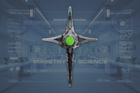
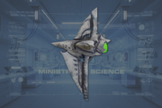 |
0% | 100% | 是 | 无 | 否 | 100% | |
| Upper Fin | 200 |
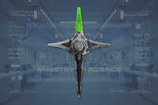
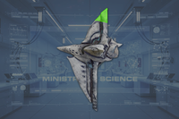 |
0% | 100% | 是 | 无 | 否 | 100% | |
| Lower Fin | 200 |
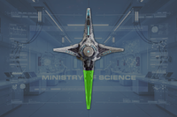
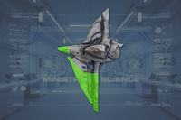 |
0% | 100% | 是 | 无 | 否 | 100% | |
| 侧面 Fins (2) | 150 |
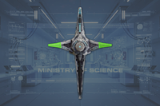
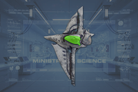 |
0% | 100% | 是 | 无 | 否 | 100% |
Disclaimer: 每个带数量的高亮部位 a 数量有各自的 生命值. 未标注数量的部位共享 生命值 pools.
Tesla Suppressor
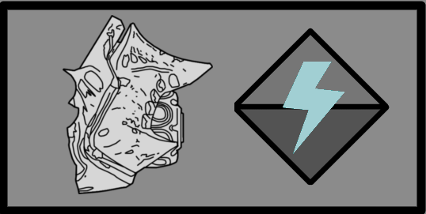
| 属性 | Value | |
|---|---|---|
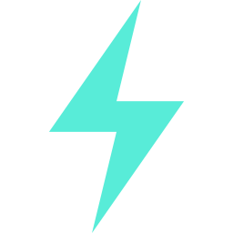 30 Strike 伤害15 耐久伤害 | ||
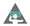 Inflicts Stun I (1.5s) | ||
| 4/3/2/0 | ||
| 1.2s (Chargeup) 4.4s (充能 Delay) | ||
| ↔[10.00] ↕[10.00] | ||
| 10 | ||
| 10 | ||
| 5 | ||
Crashing 重量

| 属性 | Value | |
|---|---|---|
| 0 弹道 伤害 0 耐久伤害 | ||
| 范围效果 | 300 爆炸 | |
| 1m | ||
| 2m | ||
| 1.5m | ||
| 10/9/10 | ||
| 0/0/0/0 | ||
| 死亡爆炸 | ||
| 死亡爆炸 | ||
| 30 | ||
| 30 (布娃娃) | ||
| 30 | ||
引爆
| 属性 | Value | |
|---|---|---|
| 0 弹道 伤害 0 耐久伤害 | ||
| 范围效果 | 80 爆炸 (100 耐久) | |
| 3m | ||
| 5m | ||
| 4m | ||
| 3/2/3 | ||
| 0/0/0/0 | ||
| 死亡爆炸 | ||
| 死亡爆炸 | ||
| 30 | ||
| 30 (布娃娃) | ||
| 30 | ||
1.007.000
2026-08-12
修复
1.006.300
2026-06-16
1.002.001
2024-12-13
Addition